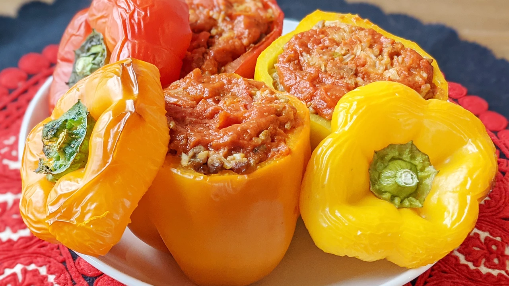

If you're looking for a filling meal that will satisfy everyone at your table, you've come to the right place. The Allrecipes community loves this top-rated stuffed pepper recipe — reviewers say it's "delicious," "easy," and "full of flavor."
Ingredients
- Vegetable oil
- Ground beef
- Pepper
- Tomato sauce
- Cheese
- Garlic
- Onion
Steps
- Preheat the oven to 350 degrees F (175 degrees C).
- Bring water and rice to a boil in a covered saucepan. Reduce heat to low and simmer until rice is tender, about 20 minutes.
- Meanwhile, heat oil in a skillet over medium heat. Add ground beef and cook until evenly browned and crumbly, 7 to 9 minutes.
- Hollow out bell peppers by removing and discarding the tops, seeds, and membranes. Slice the bottoms of the peppers if necessary to make sure they stand up straight.
- Arrange peppers in a baking dish with the hollowed sides facing upward.
- Prepare filling by mixing cooked beef, cooked rice, 1/2 of the tomato sauce, Worcestershire sauce, garlic powder, onion powder, salt, and pepper. Spoon an equal amount of filling into each hollowed pepper.
- Mix remaining tomato sauce and Italian seasoning in a bowl, and pour over the stuffed peppers.
- Bake in the preheated oven, basting with sauce every 15 minutes, until peppers are tender, about 1 hour.